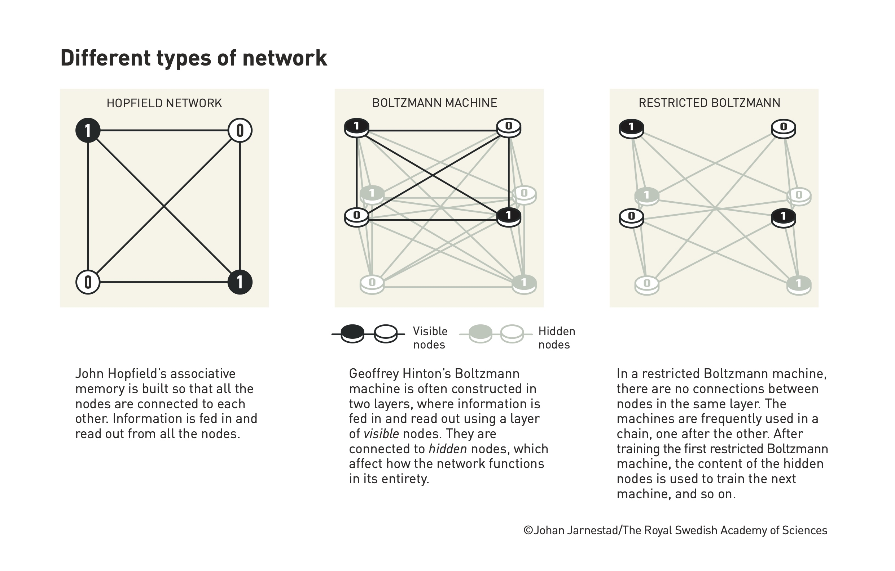

세션 1 - 인공 신경망을 이용한 기계 학습의 기초적 발견#

이 세션에서는 현대 인공 신경망(ANNs)의 발전으로 이어진 역사적 진화, 기초 개념, 그리고 존 J. 홉필드와 제프리 E. 힌튼의 선구적인 연구를 다룰 것입니다.
인공 신경망(ANNs) 소개#
역사적 배경: 인공 신경망(ANNs)의 개념은 1940년대로 거슬러 올라가며, 생물학적 뉴런의 기능에서 영감을 받았습니다.

워렌 맥컬로치와 월터 피츠(1943): 간단한 이진 신호를 사용하는 인공 뉴런 모델을 제안하여 향후 ANN 발전의 기초를 마련했습니다.
도널드 헵(1949): 헵 학습 원리를 소개했는데, 이는 뉴런이 함께 활성화될 때 연결이 강화된다는 개념으로, 현재도 신경망 훈련에 사용되고 있습니다.
ANN 발전의 첫 시기(1950년대-1980년대): ANN은 초기에 계산 한계로 인해 어려움을 겪었는데, 특히 XOR 문제(민스키와 패퍼트, 1969)에서 두드러졌습니다. 이는 초기 퍼셉트론 모델의 한계를 보여주었습니다. 연구는 1980년대까지 둔화되었다가 새로운 접근법이 등장했습니다.

존 J. 홉필드와 홉필드 네트워크#
연관 기억과 순환 네트워크: 1982년, 존 홉필드는 홉필드 네트워크라고 불리는 순환 신경망의 한 유형을 소개했습니다.
구조: 각 노드가 다른 모든 노드와 연결된 완전 연결 네트워크입니다.
에너지 지형 유추: 홉필드 네트워크는 개념적 에너지 지형에서 어트랙터 상태로 정보를 저장합니다. 불완전하거나 노이즈가 있는 입력이 주어지면, 네트워크는 에너지를 최소화하여 가장 가까운 저장된 패턴을 찾습니다. 마치 공이 가장 가까운 계곡으로 굴러가는 것과 같습니다.

응용: 이 네트워크는 연관 기억으로 작용하여 패턴 인식, 오류 수정, 왜곡된 정보 재구성에 유용합니다. 이 능력은 유사한 기억을 사용하여 부분적인 정보를 재구성하는 인간의 기억 검색과 유사합니다.
제프리 힌튼과 볼츠만 머신#
홉필드의 개념 확장: 1980년대 초, 제프리 힌튼은 홉필드의 연구를 바탕으로 볼츠만 머신(1983-1985)을 만들었으며, 확률적 요소와 숨겨진 노드를 도입했습니다.
확률적 학습: 볼츠만 머신은 통계 물리학의 볼츠만 방정식을 사용한 확률 기반 학습 접근법을 통합합니다. 이 접근법을 통해 네트워크는 최적의 패턴을 찾기 위해 다양한 구성을 탐색할 수 있으며, 새로운 데이터를 생성할 수 있는 생성 모델이 됩니다.
구조와 학습: 볼츠만 머신은 일반적으로 가시 노드와 숨겨진 노드로 구성됩니다. 숨겨진 노드는 복잡한 데이터 관계를 모델링하는 데 도움을 주어, 직접 관찰할 수 없는 특징을 포착합니다.
제한 볼츠만 머신(RBM): 간소화된 버전인 RBM은 훈련을 더 효율적으로 만들기 위해 특정 연결을 제거합니다. RBM을 사용한 계층별 사전 훈련은 깊은 네트워크를 훈련하는 중요한 단계가 되어 딥 러닝의 기초를 제공했습니다.
Restricted Boltzmann Machine (RBM)의 훈련 과정은 기계 학습에서 매우 중요한 단계로, 특히 딥 러닝에서 깊은 네트워크를 훈련하기 위해 사용됩니다. RBM은 간단한 구조 덕분에 효율적으로 훈련할 수 있습니다. 다음은 RBM 훈련 과정을 단계별로 설명한 내용입니다.
RBM의 구조#
RBM은 두 개의 층으로 구성됩니다:
가시층 (Visible Layer): 입력 데이터를 나타내는 노드들.
숨겨진 층 (Hidden Layer): 입력 데이터의 잠재적 특성을 학습하는 노드들.
양방향 연결: 가시층과 숨겨진 층 사이에는 양방향 연결이 존재하지만, 층 내의 노드들끼리는 연결되지 않습니다. 이로 인해 계산이 간단해지고 훈련이 보다 효율적입니다.
훈련 알고리즘 - 대조발산 (Contrastive Divergence, CD)#
RBM의 훈련 과정은 주로 대조발산 (Contrastive Divergence) 알고리즘을 사용하여 진행됩니다. 이 과정은 다음의 주요 단계로 이루어집니다:
초기 가시층 설정
주어진 입력 데이터를 가시층에 넣습니다. 이때, 각 가시 노드의 상태는 데이터에서 나온 값을 반영합니다.
숨겨진 층 활성화 계산
가시층이 주어진 상태에서 숨겨진 층 노드들의 상태를 업데이트합니다.
각 숨겨진 노드 \( h_j \)는 다음 확률로 활성화됩니다: $\( P(h_j = 1) = \sigma\left(\sum_i v_i w_{ij} + b_j\right) \)$ 여기서:
\( v_i \)는 가시층 노드 \( i \)의 상태입니다.
\( w\_{ij} \)는 가시 노드 \( i \)와 숨겨진 노드 \( j \) 사이의 가중치입니다.
\( b_j \)는 숨겨진 노드의 편향(bias)입니다.
\( \sigma \)는 시그모이드 함수로, 노드의 활성화 여부를 결정하는 역할을 합니다.
가시층 재구성
숨겨진 층의 상태를 이용해 가시층을 다시 구성합니다. 이 과정은 숨겨진 노드들이 주어졌을 때, 각 가시 노드의 상태를 확률적으로 결정하는 방식으로 이루어집니다: $\( P(v_i = 1) = \sigma\left(\sum_j h_j w_{ij} + a_i\right) \)\( 여기서 \) a_i $는 가시 노드의 편향입니다.
숨겨진 층 다시 계산
재구성된 가시층을 기반으로 다시 숨겨진 층의 상태를 업데이트합니다. 이는 초기 상태와 비교하여 현재의 숨겨진 층 상태를 얻기 위한 과정입니다.
가중치 업데이트
가중치 업데이트는 초기 가시층과 숨겨진 층의 상호작용과 재구성된 가시층 및 숨겨진 층의 상호작용 간의 차이를 기반으로 이루어집니다.
가중치 변화량은 다음과 같습니다: $\( \Delta w_{ij} = \eta \left( \langle v_i h_j \rangle_{\text{data}} - \langle v_i h_j \rangle_{\text{recon}} \right) \)$ 여기서:
\( \eta \)는 **학습률 (learning rate)**입니다.
\( \langle v*i h_j \rangle_{\text{data}} \)는 데이터에 의해 계산된 기대값입니다.
\( \langle v*i h_j \rangle_{\text{recon}} \)은 재구성된 가시층을 이용해 계산된 기대값입니다.
반복
위 과정을 여러 번 반복하여 가중치를 점차 조정하고, 네트워크가 입력 데이터의 잠재적인 구조를 더 잘 학습하도록 만듭니다.
훈련 과정의 주요 개념#
에너지 함수: RBM의 학습은 에너지 함수를 최소화하는 방향으로 이루어집니다. 에너지 함수는 다음과 같이 정의됩니다:
\[ E(v, h) = -\sum_i a_i v_i - \sum_j b_j h_j - \sum_{i,j} v_i w_{ij} h_j \]네트워크의 목표는 확률적 분포에서 데이터를 더 잘 설명할 수 있도록 이 에너지를 최소화하는 것입니다.
대조발산(CD): 데이터 분포와 네트워크의 모델 분포 간의 차이를 줄이기 위해 사용되는 기법으로, 일반적인 확률적 경사 하강법보다 계산량을 줄여주기 때문에 RBM 훈련에 널리 사용됩니다.
RBM 훈련의 의의와 응용#
RBM은 딥 러닝 초기 단계에서 **계층별 사전 훈련 (layer-wise pre-training)**에 사용되어 **심층 신경망(DNN)**의 훈련을 안정화하고 효율적으로 만드는 데 중요한 역할을 했습니다.
특징 학습: RBM은 숨겨진 층을 통해 입력 데이터의 잠재적인 특징을 추출할 수 있습니다. 이로 인해 비지도 학습에서 좋은 성능을 보여줍니다.
핵심 요약:
RBM은 가시층과 숨겨진 층으로 구성된 이중층 네트워크입니다.
대조발산을 사용하여 네트워크의 가중치를 업데이트하며, 이는 데이터와 모델의 차이를 줄이는 과정입니다.
에너지 최소화와 확률적 모델링을 통해 데이터의 잠재적 분포를 학습합니다.
이러한 RBM의 훈련 방식은 딥 러닝 발전에 중요한 기여를 했으며, 이후 심층 신경망의 학습 효율성과 성능을 크게 개선하는 데 사용되었습니다.
홉필드와 힌튼 연구의 영향#
물리학과의 연결: 홉필드와 힌튼 모두 ANN 모델을 개발하기 위해 통계 역학의 원리를 사용했습니다.
홉필드의 에너지 함수: 네트워크의 안정성과 기억 검색 특성은 물리학의 자기 스핀 시스템과 유사한 에너지 최소화를 사용하여 설명됩니다.
힌튼의 볼츠만 머신: 볼츠만 머신의 생성적 측면은 통계 열역학에 뿌리를 두고 있으며, 시스템은 복잡한 확률 분포를 학습하면서 에너지를 최소화하는 방향으로 진화합니다.
응용 및 광범위한 영향#
과학적 영향: 홉필드와 힌튼의 획기적인 발견은 다양한 분야를 혁신했습니다:
이미지 및 음성 인식: ANN 기반 방법은 컴퓨터 비전과 자연어 처리에 필수적이 되었습니다.
의료 진단: 초기 ANN 모델은 의료 영상의 패턴 인식에 사용되어 자동화된 진단의 발전에 기여했습니다.
딥 러닝의 기초: 홉필드와 힌튼의 연구는 오늘날 많은 AI 시스템의 기초를 형성하는 심층 신경망의 기반을 마련했으며, 여기에는 대규모 언어 모델과 **생성적 적대 신경망(GANs)**이 포함됩니다.
주요 요점#
생물학적 영감: ANN은 생물학적 뉴런의 기능에서 영감을 받았지만 특정 작업을 해결하기 위해 수학적, 계산적으로 작동하도록 설계되었습니다.
에너지 지형 유추: 홉필드 네트워크의 에너지 최소화 개념은 신경망이 어떻게 정보를 최적화하고 저장하는지 이해하는 데 유용한 비유를 제공합니다.
홉필드에서 힌튼으로: 결정론적 연관 네트워크(홉필드)에서 확률적 생성 모델(힌튼)로의 전환은 기계 학습 능력의 주요한 진화를 나타냅니다.